One day intensive
Radical Entrepreneurship
Radical Entrepreneurship: The One Day Intensive
Learn more and register here The Fractals
The Fractals
Radical Knowledge for the Age of AI
In the Age of AI, the game is changing. Most organizations are still designed for a world that's disappearing. The Fractals Company works with high-capacity humans who see this shift and want to get ahead of it.
One day intensive
Radical Entrepreneurship: The One Day Intensive
Learn more and register hereFrom the Mind of a Fractal:


Invite-only prototype
An Intensive Inquiry into Your Mind, Systems, and Reality in the Age of AI


This is a compressed, one-day prototype of Radical Clarity, the 48-hour intensive program from The Fractals Company. It's an invitation to a rigorous, Socratic inquiry into the fundamental patterns that compute your experience, your decisions, your organizations, and your relationship with emerging AI systems.
This is not a workshop, a lecture, or a networking event. It is a focused, challenging conversation designed to help you see with greater precision:
We are not offering frameworks, tactics, or easy answers. We are offering the opportunity to examine the architecture you're already running.
The Fractals Company is building Radical Clarity for high-capacity individuals who are no longer satisfied with just operating inside systems - they want to redesign them.
This 1-day session is a critical step in refining the program. We are seeking unfiltered, honest feedback from a small group of sharp, discerning minds. Your participation will directly shape the future of Radical Clarity.

This practice session is for high-capacity individuals who:
This is NOT for you if you are primarily looking for: tactics, frameworks, motivation, emotional support, or a comfortable, passive experience.
The day will be structured around a series of intensive, Socratic dialogues and exercises, designed to move you through key distinctions:
Expect to be engaged, challenged, and to leave with more questions than answers - but questions of a far higher quality.

Facilitator
Amit Rathore is a successful founder and systems thinker who, after decades building and advising companies in AI, data, and digital infrastructure, created The Fractals Company to work directly with high-capacity individuals on radical clarity - examining the fundamental patterns that compute their experience, organizations, and digital systems in the Age of AI. His work is informed by deep inquiry into consciousness (iRealization), artificial intelligence (iConsciousness), and global systems (the Intergraph).
To confirm your attendance or for any questions, please email lab@thefractals.co.
Or just fill the form below:

Radical Entrepreneurship
Please email clarity@thefractals.co for groups or custom programs.
After purchasing the program, please submit your information below. Fill out as many details as you can!
Email to attend
Radical Agency
Please email clarity@thefractals.co for groups or custom programs.
After purchasing the program, please submit your information below. Fill out as many details as you can!
Email to attend
Radical Entrepreneurship
Please email clarity@thefractals.co for groups or custom programs.
After purchasing the program, please submit your information below. Fill out as many details as you can!
Email to attend
Radical Clarity
Please email clarity@thefractals.co for groups or custom programs.
After purchasing the program, please submit your information below. Fill out as many details as you can!
Email to attendUnicorn Farming for Solopreneurs - A 90-Minute Zoom Intensive
Employment as we know it is unwinding. AI systems and agents are beginning to do what used to be "jobs," and the default path is millions of people competing for dwindling roles on platforms they don't control.
This 1-day intensive is for solopreneurs who want to be on the other side of that shift: designing human-centered economic games and fields of work that are structurally ready for AI agents, so that when agents arrive in force, they plug into your system, not the other way around. You'll spend a day re-architecting your business as a field where thousands of people, and eventually agents, can participate and earn, giving you a first-mover advantage in the coming agent age.
The work is to make the game legible before the default platforms define it for you.
We are moving into a post-employment, agent-rich world:
If you can see and map your business as a field of economic games, you're positioned to:
This 1-day workshop is for solopreneurs, creators, indie consultants, and small founder teams who:
People who are:

By the end of the day, you'll have:
The Day at a Glance
Sessions:
9:30 - 11:00 am - Session 1
From "Job Logic" to Economic Games and Fields
We start with the macro shift:
We then bring it down to your business:
You will:
See your work reframed as a game in a field:
Outcome: A clear, human-first picture of your business as a hosted game of work and value, not just a product or service.
11:30 am - 1:00 pm - Session 2: Designing a Community-Powered Field (Humans First)
We ask:
If full-time jobs are shrinking, what kind of field of work could your business host?
You'll learn the difference between:
Why, in the age of AI:
You'll receive and begin filling your Community-Powered Venture Canvas:
Outcome: A human-first sketch of how your business can become a field of work where many people can plug in and earn.
Space to integrate, connect, and think bigger.
Optional prompts:
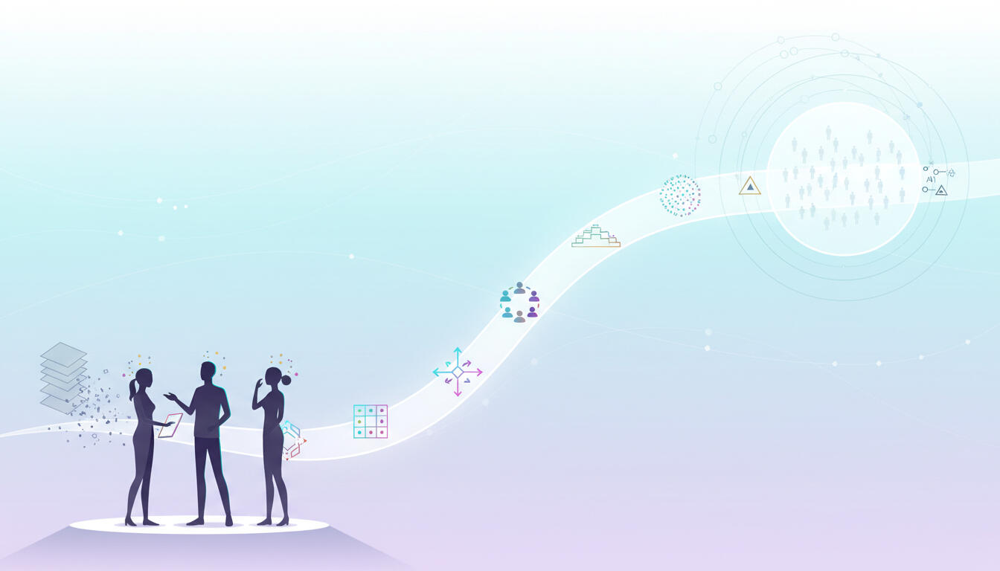
2:30 - 4:00 pm - Session 3: Value Flows, Fair Rules, and a Field of 10,000
Now we make the economics visible, so both humans and future agents can actually see your business.
You'll:
On the canvas, we fill:
Then we zoom out:
Run a field of 10,000 scenario: If 10,000 people and their agents were active in your field:
Outcome: A visible economic blueprint of your field, something humans can understand and future agents can be plugged into, rather than guessing.
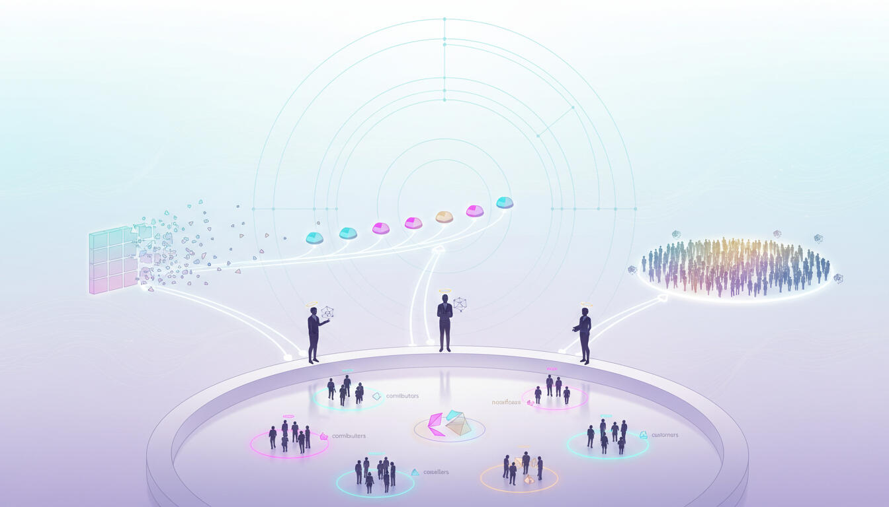
4:30 - 6:00 pm - Session 4: First-Mover Advantage in the Age of Agents
We close by explicitly tying your redesigned business to the coming age of agents.
You'll:
We'll then turn this into action:
We connect this back to the macro:
As agents become more capable, they'll look for:
You'll leave with a business that already has those, giving you a head start in hosting the work that humans + agents will want to plug into.
Outcome: A post-employment, agent-ready architecture for your business and a practical 30-60 day plan to start building your own field, before default platforms do it for your market.
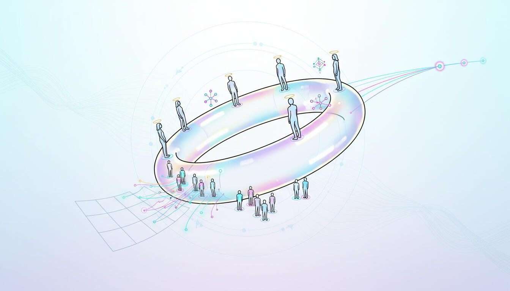
If you can feel the old world of employment and linear "product + marketing" cracking, and you'd rather host the new games of work than scramble for what's left of the old ones, this day is for you.
Radical Entrepreneurship for the Age of AI
A live, 90-minute, high-signal overview of the full 48-hour Radical Entrepreneurship program, compressed for serious solopreneurs who want to design community-powered ventures, not just launch another product.
Most "entrepreneurship" advice is still:
Build a product -> chase users -> pray for scale.
Radical Entrepreneurship starts somewhere else:
This 90-minute intensive gives you the core mental models and a working canvas from the full 48-hour program, so you can see:
This session is designed for:
You do not need to be a VC or serial founder.
You do need to be willing to think beyond "my product -> my revenue" to "our field -> our shared upside."
In 90 minutes, you'll leave with:
1. Reframing: From Product to Economic Game (0-20 min)
The difference between:
Why meaningful income for members changes retention, resilience, and the shape of your moat.
How a few thousand AI-assisted, economically active participants can rationally support multi-billion valuations.
You'll start to see where 1000 people in your world could plug in and earn.
We'll walk through a 1-page canvas that distills key ideas from the 48-hour program:
You'll actively sketch a rough version for your own venture during this section, using the canvas as a guide.
We connect a single venture to a portfolio view.
You'll see:
Once the core ideas are clear, we zoom out and show you the full arc:
You'll know exactly what happens in those 48 hours, how we work, and what you'll come out with.

Open Q&A:
We'll close with:
You'll receive:
This is a stand-alone intensive and also the front door into the other Radical Entrepreneurship programs.
This is for you if:
90-min For The Win
Design the game, field, and incentives first, before you commit years of time into building yet another small product inside someone else's platform.

Radical Entrepreneurship for the Age of AI
The Post-Employment Future of Entrepreneurship
Design ventures where a few hundred AI-assisted community members can build wealth, and in the process, build billion-dollar businesses.
You're not short on ideas, skills, or leverage.
You might have:
Yet your entrepreneurial work still feels more like a sequence of individual projects than a compounding, community-powered game:
You intuitively know:
A small, tightly aligned community, with AI assistance and real economic upside, can be more powerful than any single company.
Radical Entrepreneurship is the 48-hour program dedicated to designing those community-powered ventures.
Radical Entrepreneurship: Unicorn Farming for Solopreneurs is a 48-hour, in-person Socratic intensive for founders and builders who want to:
Instead, it is a precise, rational conversation about:
You don't leave with "7 steps to grow your followers."
You leave with clear models for community-powered ventures where both you and your members can win at scale.
Radical Entrepreneurship is built for high-capacity solopreneurs and micro-founders who:
The program is for entrepreneurs who are capable of thinking in terms of networks, incentives, AI agents, and economic graphs.
If you're interested in movement-scale entrepreneurship, where a relatively small, empowered community can move large markets, you're the intended audience.

Most "community + product" thinking today is shallow:
But community-powered ventures are fundamentally different:
Radical Entrepreneurship exists to:
See how inner clarity (Radical Clarity) and system design (Radical Agency) naturally extend into movement design, participant economics, and multi-billion-dollar platform potential.
At the core is a simple but under-used thesis:
If even a few hundred or a few thousand people can earn meaningful income through your platform, and their contributions are amplified by AI and protocols, the platform itself can legitimately be worth billions.
Over a 48-hour weekend, Radical Entrepreneurship unfolds through eight 90-minute sessions.
We move between:
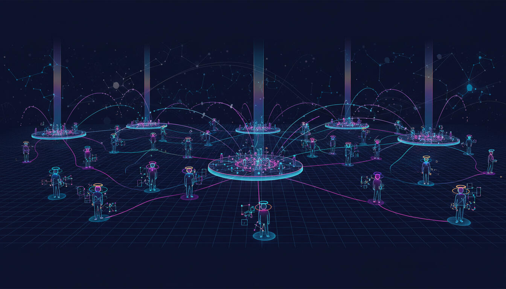
Identity, Community, and Scale
Players, Roles, and Shared Upside
Redefine your venture as a multi-player economic game:
Identify potential roles:
Ask, for each role:
From Token Gestures to Real Economics
Make "meaningful income" concrete:
For your people, in your niche, what numbers actually matter?
Explore models where:
Map different economic designs:
Seeing and Rewarding Every Contribution
Treat your venture as a graph:
Explore how a fabric like the Intergraph can:
Ask: what must your system remember and measure to reward people fairly and powerfully?
Each Member as a Mini-Organization
Reframe each serious member as a node with an AI-extended org chart:
Design how your platform:
Consider where agents:
How a Few Thousand Active Members Turn Into Billions
Walk through the logic if N members each earn M per year through your platform, what does that imply about:
Explore realistic scenarios where a few hundred or a few thousand AI-assisted cosellers / contributors drive:
Translate this into a valuation narrative that is grounded, not hype.
Keeping the Movement Human-Centric
Examine where power actually sits in your design:
Explore lightweight ways to:
Clarify your stance:
Concrete Experiments, Not Grand Plans
Integrate your clarity into 1-3 concrete experiments:
Define:
Leave with a simpler, bolder thesis:
Radical Entrepreneurship does not promise a viral community or a specific valuation.
It offers conditions for you to see clearly:
These are not guaranteed outcomes.
They are typical consequences of seeing your venture as a community-powered game instead of a solo performance.
Radical Entrepreneurship is not:
It is a root-level inquiry into how community, AI, and incentives can be combined so that:

In the Age of AI, power shifts from static institutions to networks of agents - human and machine - coordinating across a global knowledge fabric. Organizations become fractal minds-of-minds, nested within an Org-of-Orgs ecosystem, where each "mind" is powered by agents, and each agent carries its own mind-like architecture.
Radical Agency sits between Radical Clarity (your inner architecture) and agentic fabrics like the Intergraph (the outer architecture). Where Radical Clarity examines how your mind constructs reality, Radical Agency examines how you encode that architecture into organizations, products, and agentic systems - including knowledge graphs, protocols, ledgers, and games.
Radical Agency is a 48-hour Socratic intensive for founders, executives, and system-builders who want to understand consciousness deeply and apply that understanding to the design of organizations, products, and AI-powered systems.
You won't leave with a pre-fabricated framework or reference architecture. You'll leave with clean, interoperable mental models for designing any agentic system - including, but not limited to, Intergraph-style fabrics.
The program extends the inner inquiry of Radical Clarity into the outer work of building agentic, human-centric systems. It weaves together:
These combine to offer a practical "mental OS" for designing in the Age of AI.
When we say "consciousness" here, we mean that which is aware - the field in which thoughts, sensations, systems, and AI interactions all appear.
We don't require metaphysical beliefs; we stay on what can be directly observed in lived experience and in running systems.
Each 90-minute session blends deep inquiry into consciousness with concrete discussion of agentic architectures and knowledge economics - often using concepts that also power the Intergraph (Minds, Memories, Semantics, Purpose, Experience, Energy, Games, Protocols, Ledgers).
We move up and down a stack that looks like:
Consciousness -> Identity -> Language -> Value & Emotion -> Relationship & Power -> Systems & Time -> Org-of-Orgs -> Civilizational Stance
And keep mapping it to agents, minds, ledgers, and games in an agentic fabric.
How Experience Is Constructed in Humans, Orgs, and Systems
Distinguish raw awareness from the "rendered" world of concepts and stories.
See how humans, organizations, and AI systems all construct reality:
See how a knowledge graph is a system's way of "rendering reality," and how both human minds and Intergraph-style systems live inside their own renders.
Ground the rest of the program in consciousness as the field in which all experience - human, organizational, and agentic - appears.
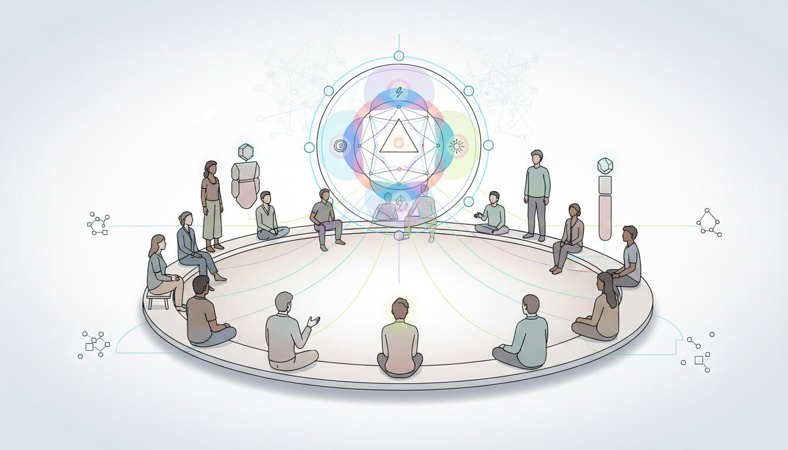
Identity in Individuals, Agents, Orgs, and Networks
Explore identity as an ongoing process in consciousness, not a fixed object.
Map this to systems:
See how personal "I", team "I", org "I", and agent "I" are all fractal expressions of the same underlying pattern.
Relate this to Intergraph-style primitives: Identities, Minds, and Purposes for humans, teams, orgs, and AI agents - each with their own Prime Directives, ledgers, and roles in a larger Mind-of-Minds.
How Words, Categories, and Prompts Shape Behavior
Examine how language and concepts define what is visible, possible, and important in human experience.
Connect to system design:
Learn to treat naming and semantic design as a primary lever of agency, clarity, and alignment: small choices in wording become large forces in behavior - for both humans and AI agents.
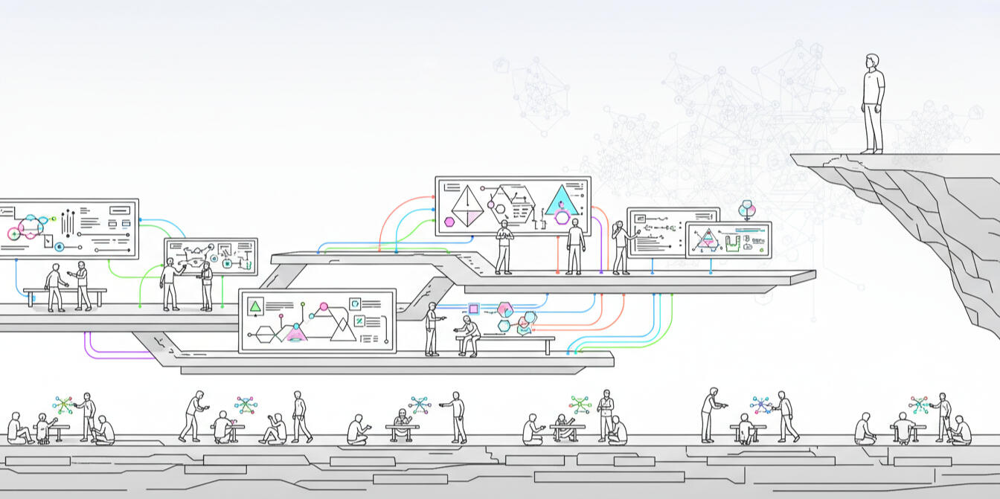
Emotion, Values, and Knowledge Economics
Understand emotions as signals of what is truly valued beneath surface goals.
Connect inner values to external systems:
See how values, experience, and energy form the basis of knowledge economy games played by humans and agents - the same primitives used in Intergraph's Knowledge Economics (Value, Experience, iCoin, Energy, Games).
Learn to design metrics, ledgers, and incentives that reflect real value rather than just what is easy to measure.
How Consciousness Relates, Coordinates, and Governs
Look at how consciousness relates to others: projection, empathy, control, collaboration.
Translate into organizational and system terms:
Distinguish between symbolic human-in-the-loop (rubber-stamp approvals) and real human agency (actual veto power at critical decision points).
Consider how ledgers, scores, and automation can either centralize or distribute power across humans and agents.
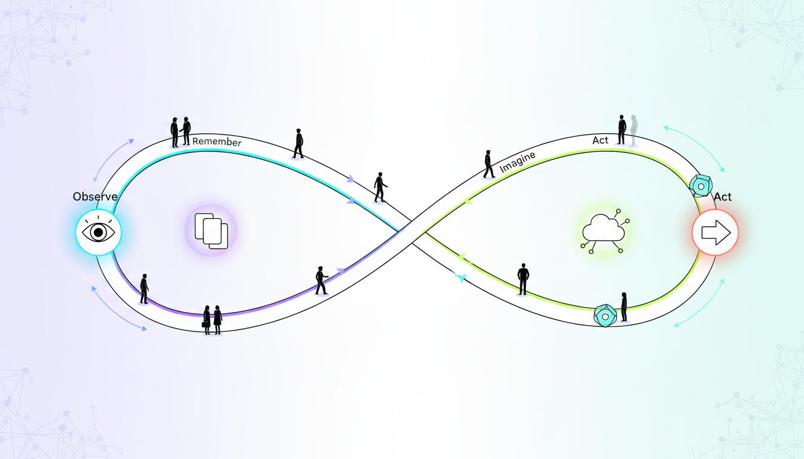
How Minds and Orgs Learn, Adapt, and Evolve
Explore memory, imagination, and learning in consciousness: how experience updates understanding.
Map this to organizations and agentic fabrics:
See how Re/Activity Loops, shared "Intergraph Time," Memories, and Energy are system-level analogs of how a human mind remembers, imagines, and updates its understanding.
Explore how to design these loops so that both humans and agents become wiser over time, not just more optimized.
Minds-of-Minds, Agents, Skills, Data, APIs, Ledgers, and Platforms
View organizations as Minds composed of many Agents of Mind: people, teams, tools, AI agents.
Place those org-minds within larger Org-of-Orgs networks: industries, ecosystems, alliances.
Examine:
Map these ideas to Intergraph's Mind-of-Agents and Internet of Intergraphs: a concrete substrate for Org-of-Orgs dynamics, data markets, and skill/knowledge pack exchanges.
Understand how agency expresses itself across a web of agents, orgs, and shared protocols, and where to intervene when things drift.

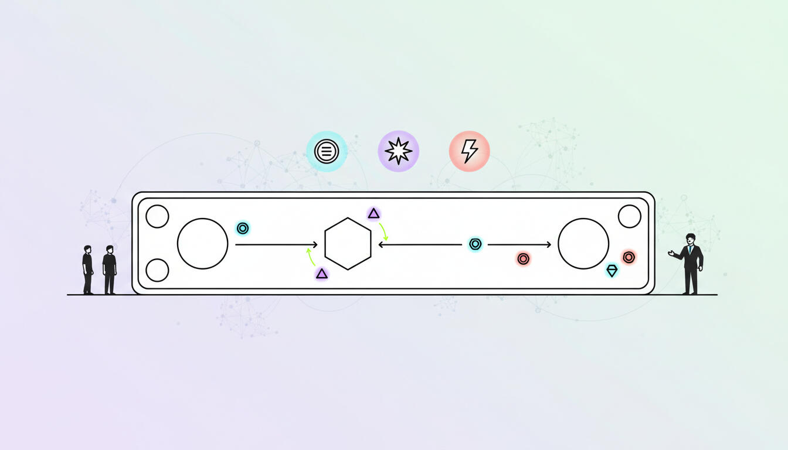
From Inner Clarity to System Design and Civilization-Scale Impact
Return to consciousness: what is aware, prior to all roles and systems.
Recognize how patterns in thought, feeling, and action propagate into teams, organizations, products, and agent networks.
Situate organizational and system design within a larger movement toward:
Connect the inner inquiry of Radical Clarity, the architectural inquiry of Radical Agency, and agentic infrastructures like the Intergraph into a single design question:
What kinds of Knowledge Economy Games, protocols, and ledgers do you actually want to instantiate?
Articulate a personal and organizational stance:
Leaders, founders, product and technology heads, system architects, and policy shapers who:
Radical Agency is not a framework course or ethics checklist. It is an upgrade to the mental models and felt understanding needed to design win/win systems - and to wield agency consciously - in the Age of AI, especially as we move toward an Internet of human and AI agents connected by fabrics like the Intergraph.
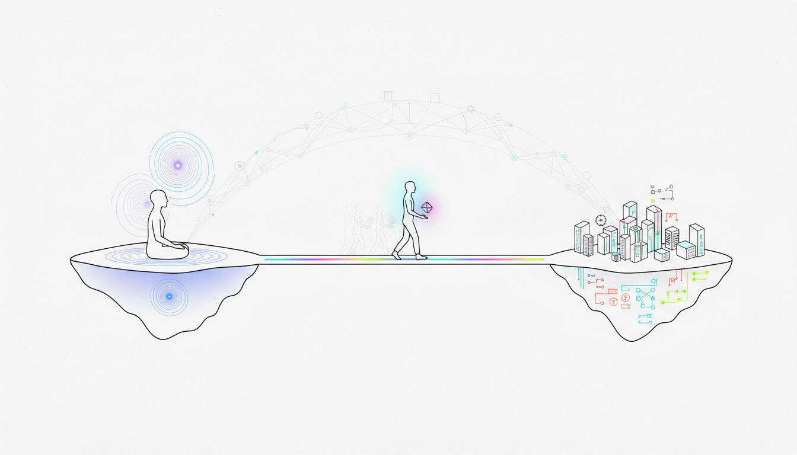
Radical Agency is a 48-hour, in-person Socratic intensive for people who design and steer systems in the Age of AI: founders, executives, product and technology leaders, system architects, and policy shapers.
Where Radical Clarity focuses on how your mind constructs reality, Radical Agency focuses on how you encode that architecture into organizations, products, protocols, and agentic fabrics - including knowledge graphs, agents, ledgers, and games.
It is not:
Instead, it is a precise, rational conversation that reveals:
You don't walk away with a new ideology or a branded methodology.
You walk away with clear, interoperable mental models for designing fractal, human-centric systems and knowledge economies in an agentic world.
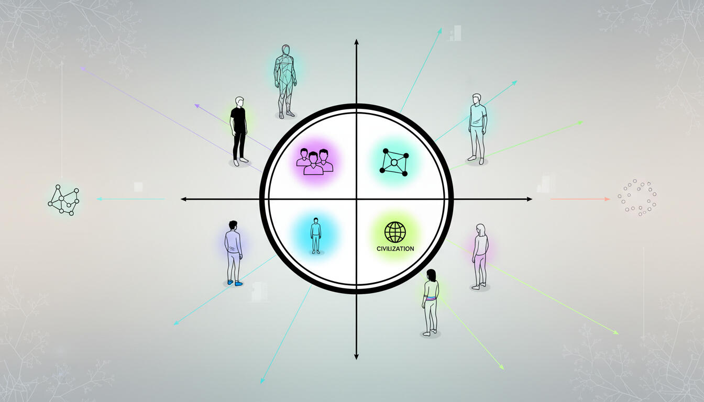
Most ambitious builders are racing to deploy agents, platforms, and AI-powered ecosystems - on top of assumptions they've never fully examined.
They:
At the same time, infrastructures like the Intergraph make it possible to encode:
Radical Agency exists to bridge this gap:
It takes the depth of Radical Clarity and the architectural precision of works like the Intergraph, and brings them into one room with the people who are actually shaping systems.
The premise is simple:
If you're going to design Minds-of-Minds, agentic economies, and Org-of-Orgs networks, you should first see clearly which games you are encoding, for whom, and at what cost.
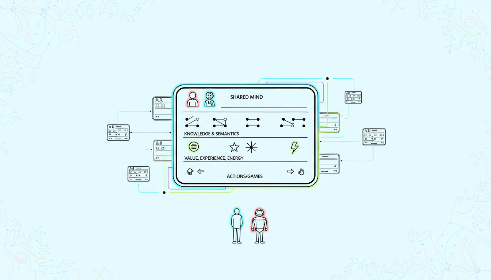
Radical Agency does not attempt to give you "the right way" to build systems.
It simply removes enough confusion that you can see what you are actually doing.
Participants commonly report:
These are not guaranteed outcomes; they are typical consequences of seeing more clearly.
The program itself promises nothing:
It offers something prior to all of that:
A clean, rational, non-woo conversation about how consciousness, agency, and architecture actually work - and how you are already using them to shape the systems, agents, and economies of the Age of AI.
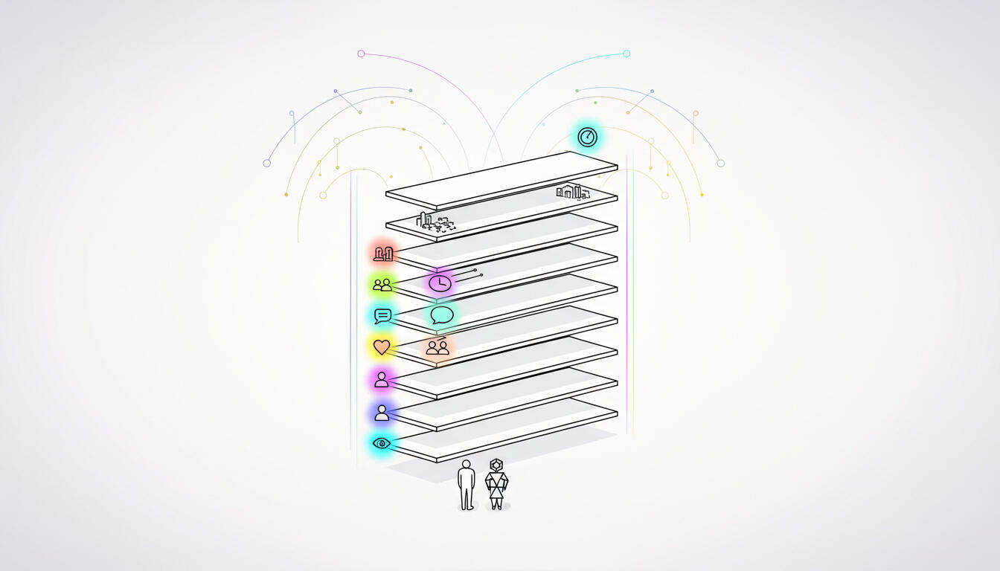


"A fractal is made up of itself."
Learn about Amit, most importantly:
A thinker and practitioner working at the frontier of consciousness, mind, and intelligence.
Amit Rathore's work lives at the intersection of three questions:
Through projects like iRealization, iConsciousness, and the Intergraph, Amit has been running a single, sustained inquiry:
How does Intelligence - human and artificial - experience, decide, and create?
Radical Clarity is where that inquiry becomes directly personal and practical for high-capacity humans.

Long before titles and companies, Amit was obsessed with a basic problem:
Instead of dismissing these as late-night philosophical questions, he treated them as engineering problems applied to consciousness:
The result is iRealization: an ongoing, rigorous investigation of reality, the I, and the structure of experience. It moves through:
It is not a collection of inspirational quotes. It is a methodical, top-down, and bottom-up audit of what we call "real."
The distinctions and clarity developed there form the deep foundation for Radical Clarity.

Alongside his inquiry into human experience, Amit has spent decades working with:
This allowed him to see that mind and intelligence are not limited to "humans thinking about life."
The same architectural questions show up in:
This led naturally to:
In other words:
Radical Clarity sits in the middle of this triangle, focused on you: the human mind making decisions in the Age of Intelligence.

From this vantage point, one thing became obvious to Amit:
Most high-capacity people are operating with extraordinary capability on top of unexamined architecture.
They have:
And yet:
Radical Clarity exists to address that gap:
It draws on the depth of iRealization and the fractal architecture of iConsciousness and The Intergraph, but it is expressed in a form that is immediately relevant to leaders, builders, and creators.
Amit's facilitation style reflects the same long inquiry:
In Radical Clarity:
Many participants describe the experience less as "being taught" and more as having their own intelligence turned back on itself, with someone present who has walked that path very, very far.
If you strip away the projects and labels, what remains is simple:
Amit has spent his life asking the hardest possible questions about reality, mind, and intelligence.
He has followed them relentlessly, both in inner inquiry and in outer building.
He is able to articulate and navigate territory that most people either ignore, mystify, or drown in abstraction.
For high-capacity humans who:
Amit offers something rare: a clear, uncompromising, yet grounded exploration of what is actually going on.
The Fractals Company is the current vessel for Amit's work on:
iRealization and iConsciousness are not side projects. They are different angles on the same question. And both are strands of the same quest.
Join The Fractals. It is here that the quest becomes yours.

Upgrade the way you see - without methods, mysticism, or performance.
Unlock a new type of intelligence and creativity that isn't capped by your current concepts, narratives, or self-image.

You're successful, but something feels misaligned. Not broken. Not burned out.
Just slightly off-axis - like you're playing a game brilliantly without knowing who wrote the rules or whether you still believe in them.
Your intelligence is high. Your default state of metacognition might not always be on.
Most leaders operate inside inherited scripts - identity, incentives, language, culture, expectations - without realizing those scripts are optional. They navigate complexity while seeing only a fraction of what's shaping their choices.
Radical Clarity is a weekend dedicated to seeing the rest.
Radical Clarity is a 48-hour, in-person Socratic dialog designed for leaders who want to understand the architecture of their own mind - and how that architecture silently shapes their organizations, relationships, and impact.
It is not coaching.
It is not therapy.
It is not a spiritual retreat.
There are no frameworks, worksheets, or tactics.
Instead, it is a precise, rigorous conversation that reveals:
You don't learn new beliefs.
You simply see the beliefs you already live inside of.


Radical Clarity is built for people who shape systems:
If that describes you, you're the intended audience.

Every human operates through a "stack" - a layered cognitive architecture:
Perception -> Identity -> Language -> Incentives -> Systems -> AI
This stack determines:
When this stack runs unconsciously, your creativity is effectively limited to what your existing model can imagine.
Radical Clarity does not optimize the stack.
Radical Clarity lets you see it.
Seeing, in this context, is the turning point.
Radical Clarity doesn't add more ideas on top. It lets you see the architecture itself, so the space of what you can even consider becomes larger than your current intellect.

The program consists of eight 90-minute sessions across Friday evening, Saturday, and Sunday.
The format is simple and deliberate:
Each session explores a domain of clarity:
The conversation is cumulative.
Not in content, but in depth.
Radical Clarity does not attempt to change you.
It simply removes what obscures what's already here.
Participants report:
These are not guarantees. They are common consequences of clarity.
But the program itself promises nothing.
Because reality promises nothing.
Clarity is not an achievement, a transformation, or an upgrade.
It is the absence of confusion, not the acquisition of insight.
Some participants "get it" in minutes.
Others in hours.
Others in months or years.
The timeline is irrelevant.
All that matters is the seeing.
The weekend simply provides the conditions for that seeing:
A clean, rational, non-woo conversation about how experience works.

The Fractals Company (TFC) is a rational, systems-oriented organization dedicated to helping high-capacity humans understand the architecture of their inner and outer worlds.
We work at the intersection of:
Not to create "better operators," but to cultivate architects of reality - people who see clearly how their inner patterns scale into organizations, teams, markets, and AI systems.

If you're ready for a clean, honest examination of how your mind constructs reality - and how that construction shapes everything you touch - apply below.
Apply Now:


This FAQ was primarily compiled for the Radical Clarity program but applies equally to Radical Agency, the companion program for builders.

1. What exactly is Radical Clarity?
Radical Clarity is a 48-hour, in-person Socratic intensive. It is a structured conversation about how your experience, identity, incentives, language, and systems actually work - individually and together. There are no frameworks, tactics, or "tools." The work is seeing the architecture you're already running, clearly, in real time.
2. What do you mean by a "Socratic intensive"?
We use "Socratic" in the literal sense: progressive questioning that exposes assumptions and clarifies what is actually true for you.
The weekend is intense because the inquiry is continuous and cumulative, not because it is loud or performative.
3. Is this coaching, therapy, or a spiritual retreat?
No.
Radical Clarity is philosophical in method and practical in implication: a clean, rational examination of how your mind and reality appear and interact.
4. How structured is the weekend?
The structure is clear; the dialog is alive. There is a defined arc of 8 sessions, e.g., experience, identity, language, systems, AI, stance, but the specific examples, depth, and emphasis are shaped by the real questions and edge cases in the room.

5. Who is this really for?
Radical Clarity is built for high-capacity humans who shape systems:
Common traits: rational, skeptical of "woo," high intelligence, a sense of misalignment ("I'm winning, but not sure what game I'm playing"), and deep curiosity about mind, systems, AI, and reality.
6. Who is this not for?
It is not a good fit if you are:
If you want comfort, validation, or ideology, this will be the wrong container.
7. Is this appropriate if I'm currently in therapy or on medication?
Often yes, sometimes no. Radical Clarity is not therapy and does not replace clinical care. Many participants have therapists or coaches and find the work complementary. If you are in acute crisis or recently hospitalized, we recommend discussing it with your clinician and with us before committing.

8. What do you actually cover in the 8 sessions?
Each 90-minute session explores a domain of clarity, for example:
9. How deep do you go into topics like consciousness and identity?
As deep as we can without leaving rational ground.
10. What do you mean by "experience is constructed" in a non-mystical sense?
Your nervous system and prior learning generate your experience from inputs. What you "see" is a model filtered by attention, memory, and expectation. The same external situation can be experienced very differently by different people - or by you at different times. No metaphysics is required to see this; we point to what you can verify in your own experience.
11. What do you mean by "Fractal Mind" and "architecting reality"?
"Fractal Mind" is shorthand for a capacity:
"Architecting reality" means designing the structures and incentives that shape how things unfold, rather than merely reacting to them.
12. How explicitly do you address AI?
AI is treated as:
We look at how your relationship to AI reveals your relationship to power, uncertainty, and creativity.
13. What do you mean by "going beyond the limits of the intellect"?
Your intellect optimizes inside the assumptions, concepts, and identities you already hold. It's good at refining a given model, less good at questioning the model itself.
"Beyond the limits of the intellect" means:
This is about expanding the search space, not abandoning reason.

14. If you don't promise outcomes, why should I attend?
Because seeing clearly is upstream of every outcome you care about. We don't promise that you will lead, build, or live differently. We only create conditions for you to see how your current patterns are computing your reality, where you're confusing narrative with fact, and how identity, incentives, and fear constrain what you can imagine. If you value truth and clarity for their own sake, that is enough.
15. Is there a risk that nothing changes for me?
Yes. It's possible to attend, listen, and keep everything at a safe distance. We don't control what you're willing to look at. That said, sustained exposure to this kind of inquiry is hard to completely ignore. For many people, the real impact lands over weeks or months as old patterns stop making sense.
16. Is there a risk that things change "too much"?
Possibly. Seeing clearly can make certain compromises, games, or roles less tenable. It can clarify which games you're no longer willing to play, even if they're lucrative. We do not encourage impulsive life changes. We do encourage you to see where you've already been out of integrity with yourself.
17. Could this make me less driven or ambitious?
It may make you less driven by confusion:
For some people, that looks like "less ambition" in conventional terms. For others, it unlocks more ambitious and unconventional moves because they are less constrained by fear and pretense.
18. What if I attend and feel like I didn't "get it"?
That can happen. Sometimes the mind expects a specific kind of experience - epiphany, emotion, or a dramatic shift. The actual shift may be quieter and only become obvious later, as old reflexes stop fitting. If you feel you didn't "get it," the relevant question becomes: what exactly were you expecting to get, and from whom? That question itself is part of the inquiry.

19. How many people are in a cohort?
Small enough for real dialog, large enough for diversity of perspective. We keep cohorts intimate, up to a dozen participants. This is not a conference or mass seminar. Every participant is expected to be part of the conversation, not an audience.
20. How interactive is it? Will I have to speak?
You won't be forced to perform, but this is not a passive event. The primary mode is group dialog - questions, challenges, examination. You are invited to bring your real questions and confusions. Silent observation is allowed, but if you're unwilling to engage at all, this is probably not a fit.
21. How is psychological safety handled?
We take safety seriously, but not as insulation from discomfort.
Safety here means you can look honestly without being attacked or managed - not that you will never feel exposed.
22. Will there be recording? Is this off-the-record?
No recordings. The weekend is off-the-record by default. Participants are expected to treat others' questions and shares as confidential. We design the space for candor, not content creation.